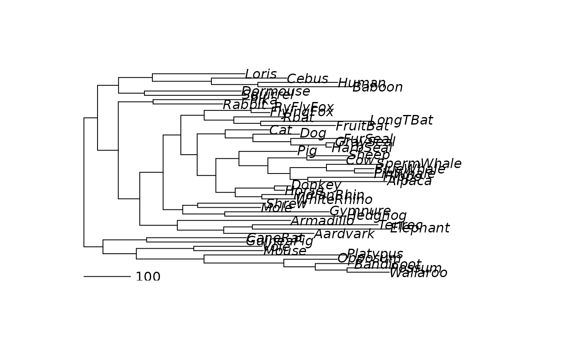

parsimony returns the parsimony score of a tree using either the
sankoff or the fitch algorithm. optim.parsimony tries to find the
maximum parsimony tree using either Nearest Neighbor Interchange (NNI)
rearrangements or sub tree pruning and regrafting (SPR). pratchet
implements the parsimony ratchet (Nixon, 1999) and is the preferred way to
search for the best tree. random.addition can be used to produce
starting trees.
Usage
acctran(tree, data)
fitch(tree, data, site = "pscore")
random.addition(data, tree = NULL, method = "fitch")
parsimony(tree, data, method = "fitch", cost = NULL, site = "pscore")
optim.parsimony(tree, data, method = "fitch", cost = NULL, trace = 1,
rearrangements = "SPR", ...)
pratchet(data, start = NULL, method = "fitch", maxit = 1000,
minit = 10, k = 10, trace = 1, all = FALSE, rearrangements = "SPR",
perturbation = "ratchet", ...)
sankoff(tree, data, cost = NULL, site = "pscore")Arguments
- tree
tree to start the nni search from.
- data
A object of class phyDat containing sequences.
- site
return either 'pscore' or 'site' wise parsimony scores.
- method
one of 'fitch' or 'sankoff'.
- cost
A cost matrix for the transitions between two states.
- trace
defines how much information is printed during optimization.
- rearrangements
SPR or NNI rearrangements.
- ...
Further arguments passed to or from other methods (e.g. model="sankoff" and cost matrix).
- start
a starting tree can be supplied.
- maxit
maximum number of iterations in the ratchet.
- minit
minimum number of iterations in the ratchet.
- k
number of rounds ratchet is stopped, when there is no improvement.
- all
return all equally good trees or just one of them.
- perturbation
whether to use "ratchet", "random_addition" or "stochastic" (nni) for shuffling the tree.
Value
parsimony returns the maximum parsimony score (pscore).
optim.parsimony returns a tree after NNI rearrangements.
pratchet returns a tree or list of trees containing the best tree(s)
found during the search. acctran returns a tree with edge length
according to the ACCTRAN criterion.
Details
The "SPR" rearrangements are so far only available for the "fitch" method, "sankoff" only uses "NNI". The "fitch" algorithm only works correct for binary trees.
References
Felsenstein, J. (2004). Inferring Phylogenies. Sinauer Associates, Sunderland.
Nixon, K. (1999) The Parsimony Ratchet, a New Method for Rapid Parsimony Analysis. Cladistics 15, 407-414
See also
bab, CI, RI, ancestral.pml,
nni, NJ, pml, getClans
,ancestral.pars, bootstrap.pml
Author
Klaus Schliep klaus.schliep@gmail.com
Examples
set.seed(3)
data(Laurasiatherian)
dm <- dist.hamming(Laurasiatherian)
tree <- NJ(dm)
parsimony(tree, Laurasiatherian)
#> [1] 9796
treeRA <- random.addition(Laurasiatherian)
treeNNI <- optim.parsimony(tree, Laurasiatherian)
#> Final p-score 9715 after 11 nni operations
treeRatchet <- pratchet(Laurasiatherian, start=tree, maxit=100,
minit=5, k=5, trace=0)
# assign edge length
treeRatchet <- acctran(treeRatchet, Laurasiatherian)
plot(midpoint(treeRatchet))
add.scale.bar(0,0, length=100)

parsimony(c(tree,treeNNI, treeRatchet), Laurasiatherian)
#> [1] 9796 9715 9713